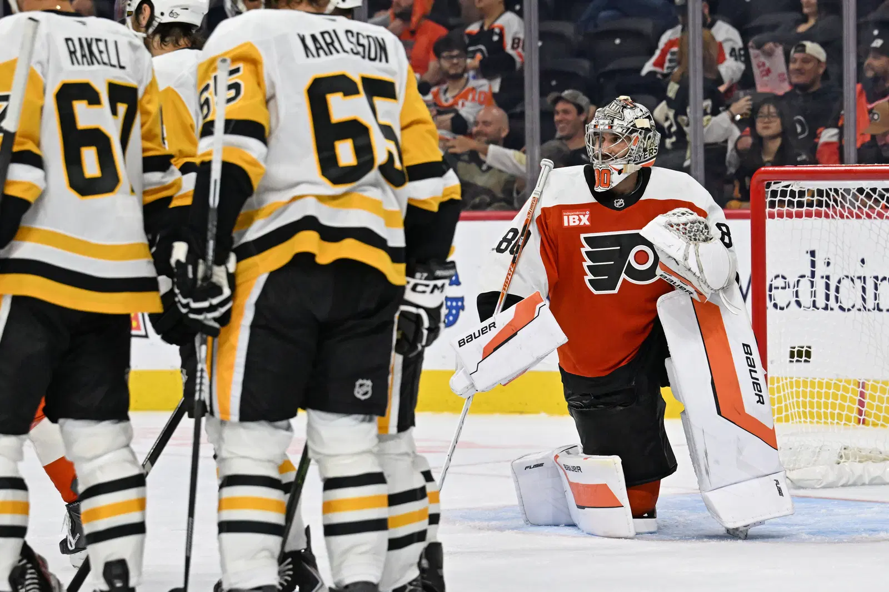

PÓS-JOGO
Aspectos da partida: Penguins 7, Flyers 0

Dan Vladar, goleiro dos Flyers, lamenta a derrota. (Foto: NHL®)
Por:
pensbrasil1 de outubro de 2026
A abertura da temporada não poderia ter sido melhor para os Pens, que dominaram os rivais Flyers em todos os aspectos do jogo, vencendo por 7 a 0.
O clima de festa rapidamente foi extinguido na XFinity Mobile Arena, em Filadélfia, quando os Penguins abriram o placar com um gol de Nick Robertson. A partir daí, tudo que se ouviu da torcida dos Flyers foram vaias, enquanto os Pens continuavam a pressionar e marcar gols.
Atuação perfeita da jovem terceira linha
Com as ausências de Andrei Kuzmenko, Bryan Rust e Ben Kindel, a terceira linha dos Penguins, composta por Filip Hallander, Hendrix Lapierre e Ville Koivunen, teve uma atuação impecável.
Hallander foi eleito a estrela da partida, com um gol e duas assistências. Em sua estreia pelos Pens, Lapierre anotou um gol e assistiu em outro, enquanto Koivunen contribuiu com um belo gol.
Shutout de Arturs Silovs
Com 19 defesas em 19 disparos, o goleiro Arturs Silovs teve uma atuação impecável, garantindo seu segundo shutout seguido em aberturas da temporada, já que na temporada passada, ele atuou na vitória por 3 a 0 contra o New York Rangers.
Após ter tido uma atuação inconsistente contra os Red Wings na pré-temporada, Silovs demonstrou confiança, fazendo defesas difíceis que mantiveram os Penguins na frente.
Veteranos seguem em forma
É a vigésima-segunda temporada de Sidney Crosby na NHL, e ao lado de Evgeni Malkin e Kris Letang, os veteranos continuam a mostrar o legado no rinque. Letang contribuiu positivamente na defesa e anotou uma assistência inteligente para o gol de Robertson.
Além do trio original, Erik Karlsson também segue firme, contribuindo com uma assistência para o gol de Chinakhov no Power Play.
Em sua primeira temporada com os Penguins, Trevor van Riemsdyk, de 35 anos, também teve uma atuação positiva no campo. Apesar de ter sido o único defensor que não anotou pontos, van Riemsdyk atuou bem na defesa, especialmente no Penalty Kill, e demonstrou muita segurança com o puck.
Próxima partida
Os Penguins farão sua estreia em casa no próximo sábado contra o Montréal Canadiens. A partida acontecerá às 20h (horário de Brasília) na PPG Paints Arena, em Pittsburgh.